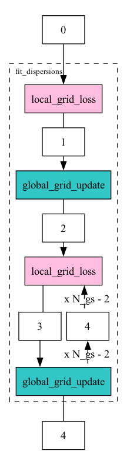

Workflow graph
The workflow graph below illustrates the sequence of operations in the design matrix construction process. It shows how data flows between local centers and the aggregation server during the fit_dispersions function.

For a detailed breakdown of the shared states and their contents at each step, please refer to the table below.
API
dispersions_grid_search
Main module to compute dispersions by minimizing the MLE using a grid search.
ComputeDispersionsGridSearch
Bases: AggGridUpdate, LocGridLoss
Mixin class to implement the computation of genewise dispersions.
The switch between genewise and MAP dispersions is done by setting the fit_mode
argument in the fit_dispersions to either "MLE" or "MAP".
Methods:
| Name | Description |
|---|---|
fit_dispersions |
A method to fit dispersions using grid search. |
Source code in fedpydeseq2/core/fed_algorithms/dispersions_grid_search/dispersions_grid_search.py
18 19 20 21 22 23 24 25 26 27 28 29 30 31 32 33 34 35 36 37 38 39 40 41 42 43 44 45 46 47 48 49 50 51 52 53 54 55 56 57 58 59 60 61 62 63 64 65 66 67 68 69 70 71 72 73 74 75 76 77 78 79 80 81 82 83 84 85 86 87 88 89 90 91 92 93 94 95 96 97 98 99 100 101 102 103 104 105 106 107 108 109 110 111 112 113 114 115 116 117 118 119 120 121 122 123 124 125 126 127 128 129 130 131 132 133 134 135 136 137 138 139 140 141 142 143 144 145 146 | |
fit_dispersions(train_data_nodes, aggregation_node, local_states, shared_state, round_idx, clean_models, fit_mode='MLE', refit_mode=False)
Fit dispersions using grid search.
Supports two modes: "MLE", to fit gene-wise dispersions, and "MAP", to fit MAP dispersions and filter them to avoid shrinking the dispersions of genes that are too far from the trend curve.
Parameters:
| Name | Type | Description | Default |
|---|---|---|---|
train_data_nodes
|
List of TrainDataNode. |
required | |
aggregation_node
|
The aggregation node. |
required | |
local_states
|
Local states. Required to propagate intermediate results. |
required | |
shared_state
|
If the fit_mode is "MLE", it is None. If the fit_mode is "MAP", it contains the output of the trend fitting, that is a dictionary with a "fitted_dispersion" field containing the fitted dispersions from the trend curve, a "prior_disp_var" field containing the prior variance of the dispersions, and a "_squared_logres" field containing the squared residuals of the trend fitting. |
required | |
round_idx
|
The current round. |
required | |
clean_models
|
Whether to clean the models after the computation. |
required | |
fit_mode
|
Literal['MLE', 'MAP']
|
If "MLE", gene-wise dispersions are fitted independently, and
|
'MLE'
|
refit_mode
|
bool
|
Whether to run on |
False
|
Returns:
| Name | Type | Description |
|---|---|---|
local_states |
dict
|
Local states. Required to propagate intermediate results. |
shared_state |
dict or list[dict]
|
A dictionary containing: - "genewise_dispersions": The MLE dispersions, to be stored locally at - "lower_log_bounds": log lower bounds for the grid search (only used in internal loop), - "upper_log_bounds": log upper bounds for the grid search (only used in internal loop). |
round_idx |
int
|
The updated round index. |
Source code in fedpydeseq2/core/fed_algorithms/dispersions_grid_search/dispersions_grid_search.py
37 38 39 40 41 42 43 44 45 46 47 48 49 50 51 52 53 54 55 56 57 58 59 60 61 62 63 64 65 66 67 68 69 70 71 72 73 74 75 76 77 78 79 80 81 82 83 84 85 86 87 88 89 90 91 92 93 94 95 96 97 98 99 100 101 102 103 104 105 106 107 108 109 110 111 112 113 114 115 116 117 118 119 120 121 122 123 124 125 126 127 128 129 130 131 132 133 134 135 136 137 138 139 140 141 142 143 144 145 146 | |
substeps
Module to implement the substeps to fit dispersions with MLE.
This module contains all the substeps to fit dispersions using a grid search.
AggGridUpdate
Mixin to compute global MLE grid updates.
Source code in fedpydeseq2/core/fed_algorithms/dispersions_grid_search/substeps.py
156 157 158 159 160 161 162 163 164 165 166 167 168 169 170 171 172 173 174 175 176 177 178 179 180 181 182 183 184 185 186 187 188 189 190 191 192 193 194 195 196 197 198 199 200 201 202 203 204 205 206 207 208 209 210 211 212 213 214 215 216 217 218 219 220 221 222 223 224 225 226 227 228 229 230 231 232 233 234 235 236 237 238 239 240 241 242 243 244 245 246 247 248 249 250 251 252 | |
global_grid_update(shared_states, prior_reg=False, dispersions_param_name='genewise_dispersions')
Aggregate local MLE summands on a grid and update global dispersion.
Also sets new search intervals for recursion.
Parameters:
| Name | Type | Description | Default |
|---|---|---|---|
shared_states
|
list
|
List of local states dictionaries, with: - "nll": local negative log-likelihoods (n_genes x grid_length), - "CR_summand": local Cox-Reid adjustment summands (n_params x n_params x n_genes x grid_length), - "grid": grid of dispersions that were evaluated (n_genes x grid_length), - "max_disp": global upper bound on dispersions. - "reg": prior regularization to add for MAP dispersions (only if prior_reg is True). |
required |
prior_reg
|
bool
|
Whether to include prior regularization, for MAP estimation (default: False). |
False
|
dispersions_param_name
|
str
|
Name of the dispersion parameter to update. Dispersions will be saved under this name. (default: "genewise_dispersions"). |
'genewise_dispersions'
|
Returns:
| Type | Description |
|---|---|
dict
|
Keys: - dispersions_param_name: updated dispersions (n_genes), - "lower_log_bounds": updated lower log bounds (n_genes), - "upper_log_bounds": updated upper log bounds (n_genes). |
Source code in fedpydeseq2/core/fed_algorithms/dispersions_grid_search/substeps.py
164 165 166 167 168 169 170 171 172 173 174 175 176 177 178 179 180 181 182 183 184 185 186 187 188 189 190 191 192 193 194 195 196 197 198 199 200 201 202 203 204 205 206 207 208 209 210 211 212 213 214 215 216 217 218 219 220 221 222 223 224 225 226 227 228 229 230 231 232 233 234 235 236 237 238 239 240 241 242 243 244 245 246 247 248 249 250 251 252 | |
LocGridLoss
Mixin to compute local MLE summands on a grid.
Source code in fedpydeseq2/core/fed_algorithms/dispersions_grid_search/substeps.py
21 22 23 24 25 26 27 28 29 30 31 32 33 34 35 36 37 38 39 40 41 42 43 44 45 46 47 48 49 50 51 52 53 54 55 56 57 58 59 60 61 62 63 64 65 66 67 68 69 70 71 72 73 74 75 76 77 78 79 80 81 82 83 84 85 86 87 88 89 90 91 92 93 94 95 96 97 98 99 100 101 102 103 104 105 106 107 108 109 110 111 112 113 114 115 116 117 118 119 120 121 122 123 124 125 126 127 128 129 130 131 132 133 134 135 136 137 138 139 140 141 142 143 144 145 146 147 148 149 150 151 152 153 | |
local_grid_loss(data_from_opener, shared_state, prior_reg=False, refit_mode=False)
Compute local MLE losses and Cox-Reid summands on a grid.
Parameters:
| Name | Type | Description | Default |
|---|---|---|---|
data_from_opener
|
AnnData
|
Not used. |
required |
shared_state
|
dict
|
Shared states with the previous search intervals "lower_log_bounds" and "upper_log_bounds", except at initial step where it is None in the case of gene-wise dispersions, or contains the output of the trend fitting in the case of MAP dispersions. |
required |
prior_reg
|
bool
|
Whether to include prior regularization, for MAP estimation (default: False). |
False
|
refit_mode
|
bool
|
Whether to run on |
False
|
Returns:
| Type | Description |
|---|---|
dict
|
Keys:
- "nll": local negative log-likelihoods (n_genes x grid_length),
- "CR_summand": local Cox-Reid adjustment summands
(n_params x n_params x n_genes x grid_length),
- "grid": grid of dispersions to evaluate (n_genes x grid_length),
- "n_samples": number of samples in the local dataset,
- "max_disp": global upper bound on dispersions.
- "non_zero": mask of all zero genes.
- "reg": quadratic regularization term for MAP estimation (only if
|
Source code in fedpydeseq2/core/fed_algorithms/dispersions_grid_search/substeps.py
32 33 34 35 36 37 38 39 40 41 42 43 44 45 46 47 48 49 50 51 52 53 54 55 56 57 58 59 60 61 62 63 64 65 66 67 68 69 70 71 72 73 74 75 76 77 78 79 80 81 82 83 84 85 86 87 88 89 90 91 92 93 94 95 96 97 98 99 100 101 102 103 104 105 106 107 108 109 110 111 112 113 114 115 116 117 118 119 120 121 122 123 124 125 126 127 128 129 130 131 132 133 134 135 136 137 138 139 140 141 142 143 144 145 146 147 148 149 150 151 152 153 | |
Table with shared quantities between centers and server
| ID | Name | Type | Shape | Description | Computed by | Sent to |
|---|---|---|---|---|---|---|
| 1 | nll | nparray | \((G, N_{\texttt{gs}})\) | For all genes \(g\) and all dispersion values \(\alpha_g\) in the logarithmic grid between \(\texttt{min\_disp}\) \(\max(\texttt{max\_disp},n)\) of size \(N_{\texttt{gs}}\), the negative log likelihood of the negative binomial GLM with fixed mean parameters \(\mu^{(k)}_{ig}\) over the set of local samples and dispersion parameter \(\alpha_g\). If the number of unique levels of all factors is equal to the number of parameters \(p\), then \(\mu^{(k)}_{ig}\) is defined as \(\texttt{nan}\) for zero genes, and as the minimum of \(\gamma^{(k)}_{i}~(X^{(k)})^{\top} G^{-1}\Phi_g\) and \(\texttt{min\_mu}:=0.5\) (for the definition of \(G\) and \(\Phi_g\), see step 8). Otherwise, \(\mu^{(k)}_{ig}\) is defined as \(\gamma^{(k)}_{i}~\exp(X^{(k)}_{i} \cdot \beta_g)\) on non-zero genes, where \(\beta_g\) is the log fold change result of the IRLS algorithm, and as \(\texttt{nan}\) on zero genes. | Each center | Server |
| 1 | CR_summand | nparray | \((G, N_{\texttt{gs}}, p, p)\) | For all genes \(g\) and all dispersion values \(\alpha_g\) in the logarithmic grid between \(\texttt{min\_disp}\) \(\max(\texttt{max\_disp},n)\) of size \(N_{\texttt{gs}}\), the matrix of the Cox-Reid regularization term pertaining to the samples in the center \(k\). This matrix is computed as \(\text{CR}^{(k)}_{g} = (X^{(k)})^{\top} W^{(k)}_g X^{(k)}\) where \(W^{(k)}_g \in \mathbb{R}^{n_k \times n_k}\) is the diagonal matrix with diagonal entries \(\frac{\mu^{(k)}_{ig}}{1 + \mu^{(k)}_{ig} \alpha_g}\) for \(1 \leq i \leq n_k\). \(\mu^{(k)}_{ig}\) is the expected value of the gene for sample \(i\), whose expression can be found in the description of the nll variable. | Each center | Server |
| 1 | grid | nparray | \((G, N_{\texttt{gs}})\) | The logarithmic grid between \(\texttt{min\_disp}\) and \(\max(\texttt{max\_disp},n)\) of size \(N_{\texttt{gs}}\). | Each center | Server |
| 1 | max_disp | int | The effective maximum value of the dispersion parameter \(\max(\texttt{max\_disp},n)\). | Each center | Server | |
| 1 | non_zero | nparray | \((G,)\) | A boolean array indicating which genes have non-zero counts in at least one center. | Each center | Server |
| 2 | genewise_dispersions | nparray | \((G,)\) | For each gene \(g\), the current estimate of the dispersion parameter \(\alpha_g\). This estimate is computed by first computing the global nll (summing all local nlls) as well as the global Cox-Reid regularization term, which is half the log determinant of the sum of the local Cox-Reid matrices. The Cox-Reid regularized nll per gene and per dispersion in the grid is obtained by summing the regularization term and the nll. Finally, for every gene, the dispersion parameter is estimated by taking the minizer of this regularized nll on the grid of size \(N_{\texttt{gs}}\). | Server | Center |
| 2 | lower_log_bounds | nparray | \((G,)\) | For each gene \(g\), the maximum of the log of the min dispersion and \(\alpha_g - \delta\) where \(\delta\) is the current mesh size of the grid and \(\alpha_g\) is the current dispersion estimate. This value will be used as a lower bound for the next grid search for the dispersion parameter. | Server | Center |
| 2 | upper_log_bounds | nparray | \((G,)\) | For each gene \(g\), the minimum of the log of the max dispersion and \(\alpha_g + \delta\) where \(\delta\) is the current mesh size of the grid and \(\alpha_g\) is the current dispersion estimate. This value will be used as an upper bound for the next grid search for the dispersion parameter. | Server | Center |
| 3 | nll | nparray | \((G, N_{\texttt{gs}})\) | For all genes \(g\) and all dispersion values \(\alpha_g\) in the logarithmic grid between the exponential of the lower log bound and of the upper log bound of size \(N_{\texttt{gs}}\), the negative log likelihood of the negative binomial GLM with fixed mean parameters \(\mu^{(k)}_{ig}\) over the set of local samples and dispersion parameter \(\alpha_g\). If the number of unique levels of all factors is equal to the number of parameters \(p\), then \(\mu^{(k)}_{ig}\) is defined as \(\texttt{nan}\) for zero genes, and as the minimum of \(\gamma^{(k)}_{i}~(X^{(k)})^{\top} G^{-1}\Phi_g\) and \(\texttt{min\_mu}:=0.5\) (for the definition of \(G\) and \(\Phi_g\), see step 8). Otherwise, \(\mu^{(k)}_{ig}\) is defined as \(\gamma^{(k)}_{i}~\exp(X^{(k)}_{i} \cdot \beta_g)\) on non-zero genes, where \(\beta_g\) is the log fold change result of the IRLS algorithm, and as \(\texttt{nan}\) on zero genes. | Each center | Server |
| 3 | CR_summand | nparray | \((G, N_{\texttt{gs}}, p, p)\) | For all genes \(g\) and all dispersion values \(\alpha_g\) in the logarithmic grid between the exponential of the lower log bound and of the upper log bound of size \(N_{\texttt{gs}}\), the matrix of the Cox-Reid regularization term pertaining to the samples in the center \(k\). This matrix is computed as \(\text{CR}^{(k)}_{g} = (X^{(k)})^{\top} W^{(k)}_g X^{(k)}\) where \(W^{(k)}_g \in \mathbb{R}^{n_k \times n_k}\) is the diagonal matrix with diagonal entries \(\frac{\mu^{(k)}_{ig}}{1 + \mu^{(k)}_{ig} \alpha_g}\) for \(1 \leq i \leq n_k\). \(\mu^{(k)}_{ig}\) is the expected value of the gene for sample \(i\), whose expression can be found in the description of the nll variable. | Each center | Server |
| 3 | grid | nparray | \((G, N_{\texttt{gs}})\) | The logarithmic grid between the exponential of the lower log bound and of the upper log bound of size \(N_{\texttt{gs}}\). | Each center | Server |
| 3 | max_disp | int | The effective maximum value of the dispersion parameter \(\max(\texttt{max\_disp},n)\). | Each center | Server | |
| 3 | non_zero | nparray | \((G,)\) | A boolean array indicating which genes have non-zero counts in at least one center. | Each center | Server |
| 4 | genewise_dispersions | nparray | \((G,)\) | For each gene \(g\), the current estimate of the dispersion parameter \(\alpha_g\). This estimate is computed by first computing the global nll (summing all local nlls) as well as the global Cox-Reid regularization term, which is half the log determinant of the sum of the local Cox-Reid matrices. The Cox-Reid regularized nll per gene and per dispersion in the grid is obtained by summing the regularization term and the nll. Finally, for every gene, the dispersion parameter is estimated by taking the minizer of this regularized nll on the grid of size \(N_{\texttt{gs}}\). | Server | Center |
| 4 | lower_log_bounds | nparray | \((G,)\) | For each gene \(g\), the maximum of the log of the min dispersion and \(\alpha_g - \delta\) where \(\delta\) is the current mesh size of the grid and \(\alpha_g\) is the current dispersion estimate. This value will be used as a lower bound for the next grid search for the dispersion parameter. | Server | Center |
| 4 | upper_log_bounds | nparray | \((G,)\) | For each gene \(g\), the minimum of the log of the max dispersion and \(\alpha_g + \delta\) where \(\delta\) is the current mesh size of the grid and \(\alpha_g\) is the current dispersion estimate. This value will be used as an upper bound for the next grid search for the dispersion parameter. | Server | Center |